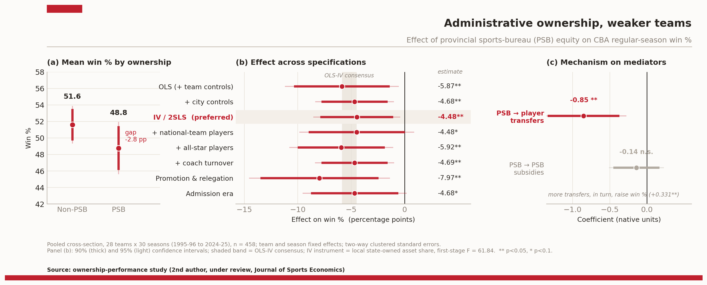

基于 30 个赛季、28 支球队的面板数据，以工具变量（IV / 2SLS）识别省级体育局（PSB）持股对球队战绩的因果影响，并厘清其作用机制是"输送资源"还是"干预决策"。本人为第二作者，论文在 Journal of Sports Economics 审稿中（under review）。
国有资本广泛参与市场，也延伸进了职业体育。CBA 中不少俱乐部由省级体育局（PSB）持股，这种安排在理论上有两种相反的预期。
PSB 持股可带来财政补贴、基础设施与隐性担保，提升俱乐部的运营稳定与长期竞争力——预测对战绩为正。
PSB 介入也可能干预市场化决策（尤其是球员配置），偏离"胜场最大化"目标——预测对战绩为负。
两种机制方向相反，孰强孰弱是一个实证问题。本研究因此回答两件事：PSB 持股究竟提升还是抑制球队战绩？又通过什么机制起作用？
直接比较"有 PSB 持股"与"无 PSB 持股"的球队会有内生性——持股与战绩可能同时被第三因素驱动。研究的核心因此不是描述差异，而是把相关识别成因果。
结果指向"攫取之手"：有 PSB 持股的俱乐部，常规赛胜率比无持股者低约 4.7–5.9 个百分点；该负效应在工具变量估计与一系列稳健性检验下保持稳定。

机制分析用 PSB 年度财政支持作为"资源供给"的代理、用相邻赛季球员转会数作为"资源配置强度"的代理：负效应主要来自球员配置的扭曲，而非财政支持不足——更多转会本身能提升胜率（+0.331**），但 PSB 持股恰恰压低了转会活跃度。
作为第二作者，我处理球队与球员层面的表现数据、构建能力评估指标，并以因果推断厘清持股对战绩的影响——识别因果，而非停留于相关；同时完整走过了一篇论文从分析到投稿的流程。
这块工作与生物并不同域，但训练的是同一种判断力：在用数据下结论之前，先确认这个结论是否真的成立——是因果还是相关、是否经得起换设定、机制是否说得通。这与我在 蛋白校准 里检验模型可靠性、在 模型训练 里要求结论可被验证，是同一套方法论的不同载体。